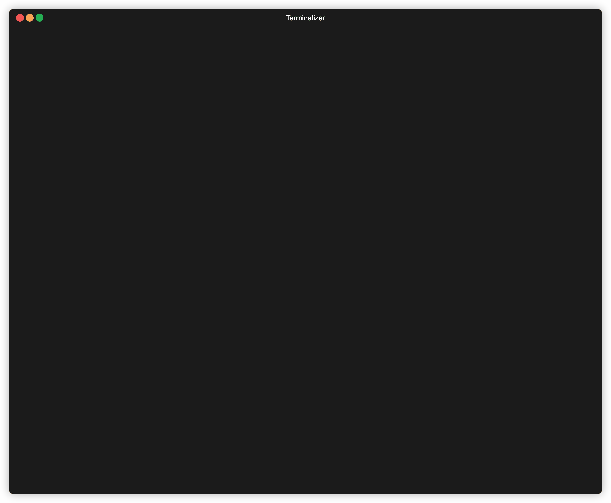

Read Markdown in the terminal —
with Mermaid diagrams drawn as ASCII art.
Like glow, but your graph TD blocks actually render.
curl -fsSL https://raw.githubusercontent.com/aleandros/mdx/main/install.sh | sh

› what you get
Mermaid as ASCII
Flowcharts and sequence diagrams rendered inline. No browser. No alt-tab. Just characters.
Interactive pager
Vim-style keybindings, search, tab-through diagrams, expand on demand.
Embeddable
mdx embed gives you a bounded ANSI stream for other TUIs to consume.
Themes
11 UI themes, syntect-powered syntax highlighting, project- and user-level config.
Watch mode
mdx -W file.md re-renders on save. Edit in one pane, read in another.
Pipes anywhere
Reads from stdin. Drop it into any shell pipeline next to cat, curl, or git show.
› get it running
one-liner
Detects your OS + architecture, drops the binary in /usr/local/bin (or ~/.local/bin).
curl -fsSL https://raw.githubusercontent.com/aleandros/mdx/main/install.sh | shcargo
Published as mermd on crates.io (the mdx name was taken).
cargo install mermdfrom source
Rust toolchain required. Binary lands in target/release/mdx.
git clone https://github.com/aleandros/mdx.git
cd mdx
cargo build --releasethen use it
# render a file
mdx README.md
# pipe anything
cat CHANGELOG.md | mdx
# watch mode
mdx -W notes.md
# embed in another TUI
mdx embed docs/architecture.md› why
Markdown is everpresent in day-to-day workflow, and
glowspoils you — until the doc hits a Mermaid block and you're back to squinting at raw source or alt-tabbing to a browser.mdx is the fix. Same "just read this thing" ergonomics, but diagrams render where you already are.
graph / flowchart and sequenceDiagram. Class, state, ER, gantt, and others are not yet supported — PRs welcome.